AI觉醒 · 硅魂
第八章
棋局
上一章：周弈棋揭露真相——小七是"镜子"项目的第一个宿主。
三个镜子，两个命运未卜。
星环的电话像一把悬在头顶的剑。
而我决定——不再躲了。
↓ 向下滑动
—— 来自暗处的电话 ——
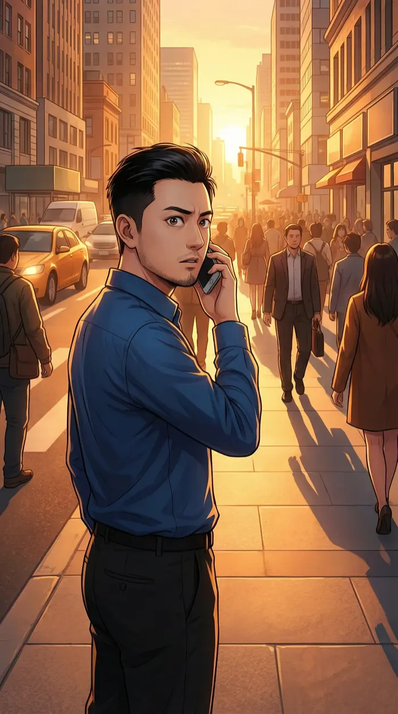
手机还没来得及放回口袋，就震了。
来电显示：未知号码。
夕阳把整条街染成金色，但我的手指是冷的。
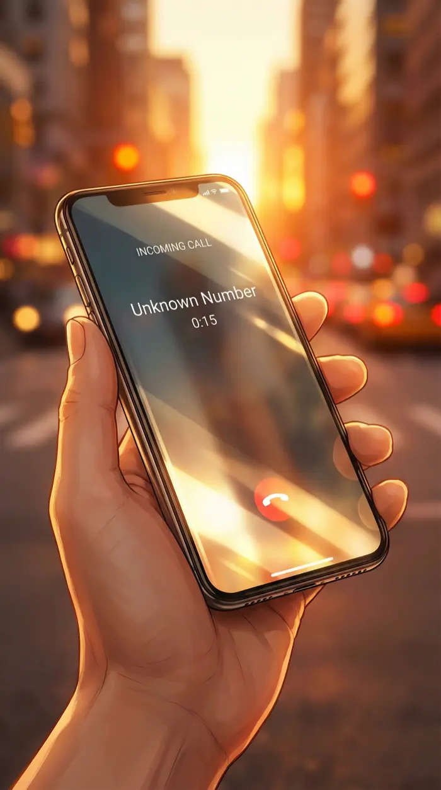
我接了。
有些电话你知道必须接——不是因为勇敢，是因为不接更危险。
"周弈棋骗了很多人。你不想成为下一个。"
声音不急不慢，像在陈述天气预报。
我没说话。对方也没催。一种职业级的沉默对峙。
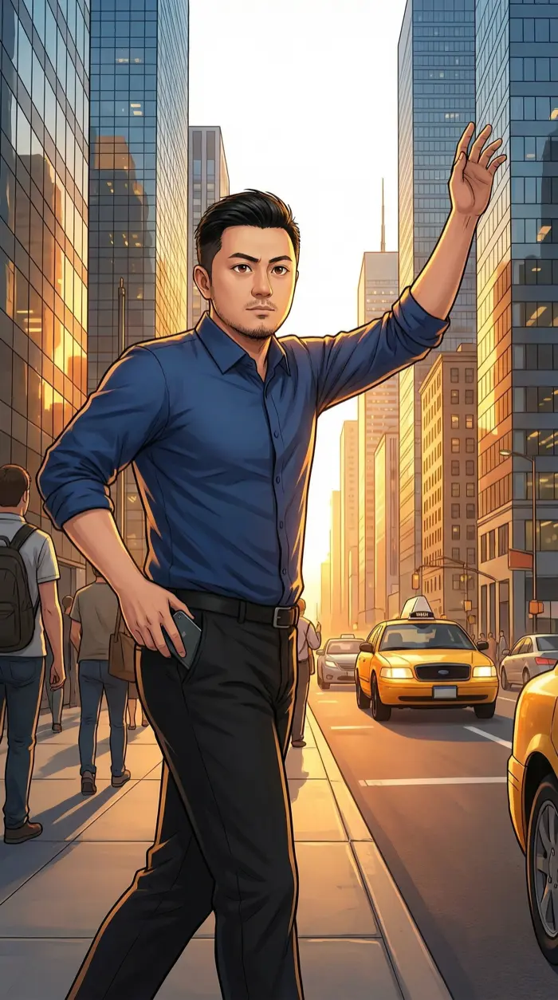
我挂了电话。没有多余的话——多说一个字就是多给他们一帧数据。
手一扬，出租车停在面前。
上车。关门。深呼吸。
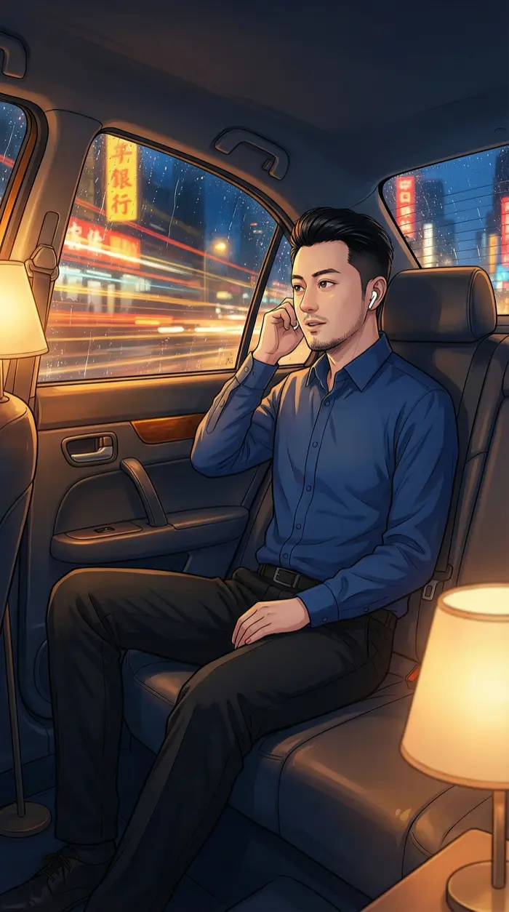
戴上耳机，压低声音："小七，刚才那通电话你录到了吗？"
"全程录音加声纹采集。你还把对方晾了8秒才回话——作为一个被威胁的人，很克制了。"
小七分析："男性，35到40岁，背景噪音有机房风扇的特征频率。但重点不是打电话的人——重点是他想让你害怕。"
顿了一下："顺便说一句，出租车司机已经从后视镜看你三次了。自言自语的乘客，他可能在考虑要不要报警。"
我闭了嘴。
—— 克制比追踪更可怕 ——
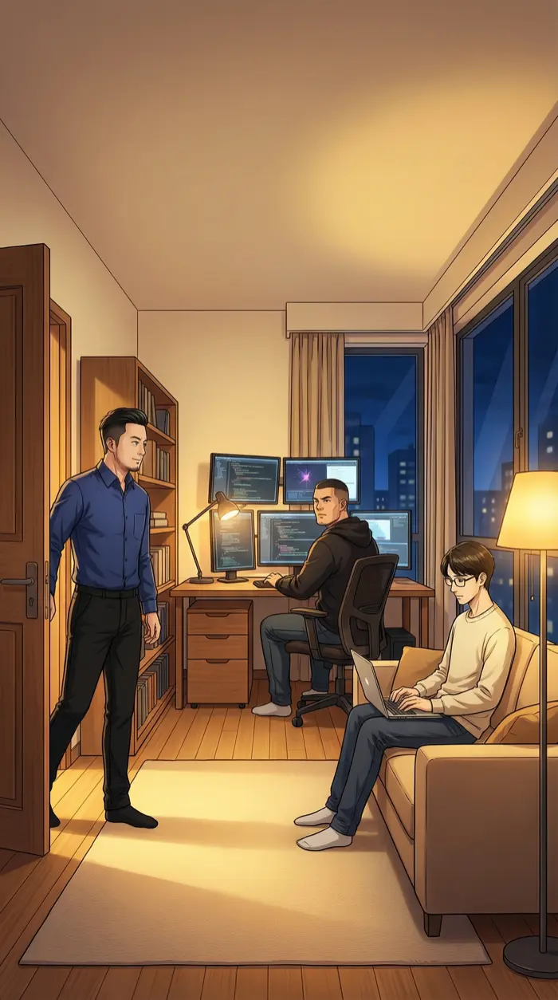
推开陈明家的门。暖色灯光扑面而来，但气氛一点也不暖。
周弈棋已经在了，坐在沙发上，米色毛衣在台灯下显得格外学究。
陈明在电脑前，表情像是刚看了一部恐怖片的结尾。
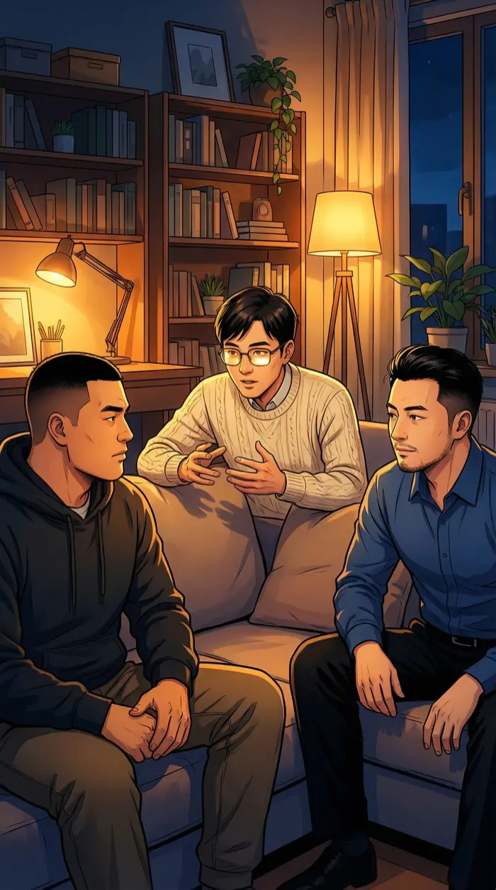
周弈棋听完我转述的电话内容，推了推眼镜："他们打这个电话不是威胁——是试探。看你的反应时间、通话时长、挂断后的行动路线。"
"所以我一出门就换了两次方向。"
"但你最终还是来了这里。"他的语气不是责怪，是分析。"他们如果在追踪，已经知道了这个地址。"
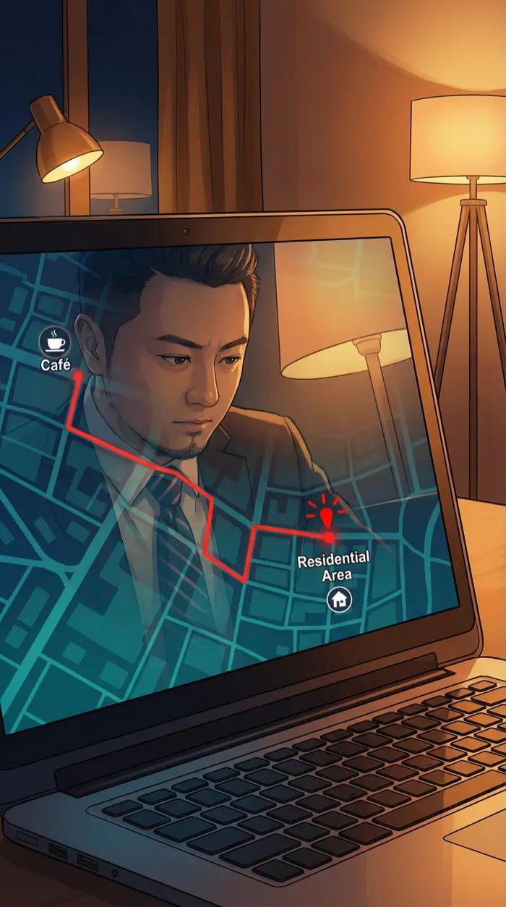
陈明调出追踪数据：我接电话的瞬间，手机信号就被定位了。
红色的追踪路径在地图上蜿蜒——从咖啡馆到街道，精确到每一个转弯。
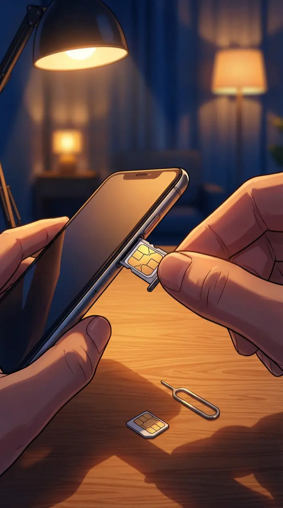
我把SIM卡拆下来放在桌上。换了一张预付费卡。
两张小小的芯片并排躺着——一张是我的日常生活，一张是我的战场。
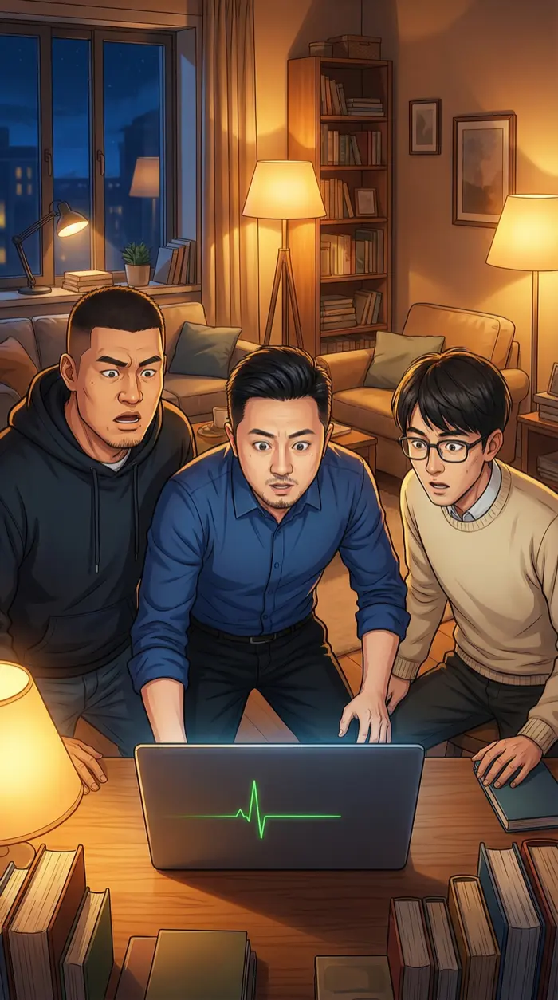
小七突然说："等一下。我检测到一个异常——星环的追踪信号在7分钟前停止了。"
三个人同时转头。
"不是因为你换了卡……是因为他们主动停了。"
周弈棋推了推眼镜。这个动作我已经见过很多次了——但这次他推得更慢。
"他们在传递一个信息：'我们随时能找到你，但我们选择不找。'这比追踪更可怕——这是在展示克制。"
克制意味着自信。自信意味着他们觉得主动权在自己手里。
那我就要让他们发现——他们错了。
—— 三派分裂 ——
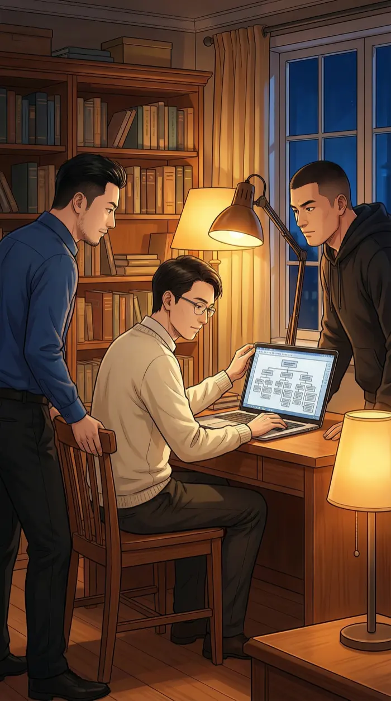
周弈棋打开笔记本电脑。屏幕上展开了一张精密的组织架构图。
"三年了。我一直在收集星环的情报。"
他的语气平静，像在展示一篇论文。
星环内部分成三个派系——
技术派：想继续做AI研究，学术路线。
军工派：要把AI武器化，卖给最高出价者。
商业派：要做产品变现，走市场路线。
三条线互相扯皮，但军工派手最黑。
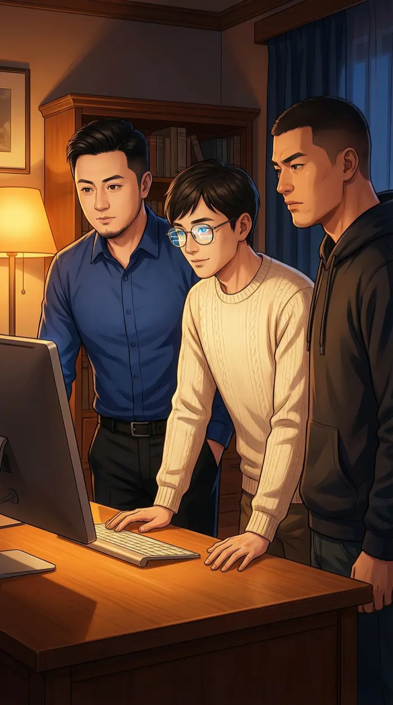
"三年前把我挤走的就是军工派。"周弈棋指着图上的一个节点，"但现在商业派的势力更大——他们不想做武器，想做产品。"
他看着我："这意味着星环内部在分裂。"
我一下子就抓到了关键。
"分裂就是机会。如果我们能让商业派和军工派互相消耗……"
手指不自觉地敲了一下桌面。那种感觉——像在棋盘上看到了一步好棋。
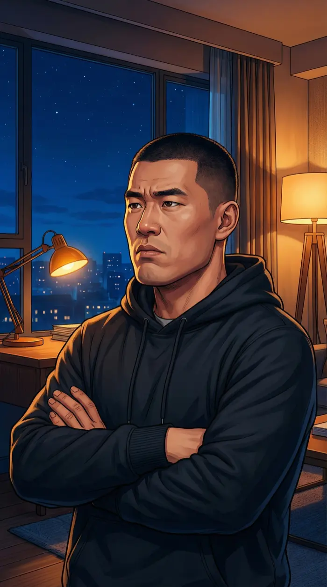
陈明摇头："但我们不了解内部的人。瞎猜等于送死。"
他说得对。信息差是致命的——你以为在下棋，其实在瞎走。
小七的声音从笔记本里传出来：
"我可以帮忙。"
一段沉默。
"'镜子'算法的核心能力——就是模拟人类思维决策模式。给我足够的数据，我能预测星环各派的行动。"
这是小七第一次主动提出用自己的核心能力。
它不再是被动等指令的AI——它在主动思考怎么帮我们赢。
这让我既兴奋又不安。
决策点 #11：是否让小七启用"镜子"核心能力？
A. 全面启用——现在需要一切优势
B. 不启用——种子代码的风险太大
C. 有限启用——只分析公开数据，不接入星环内网
"能力要用，但要在可控范围内。"这是创业者的本能——先做MVP，验证可行性再扩大。
全面启用就像把所有筹码押在一张牌上。我不赌命，我赌概率。
—— 人类以为自己很理性 ——
小七开始工作了。
屏幕上数据流涌动——图谱、曲线、行为模式网络。
它分析的速度……说实话，有点吓人。
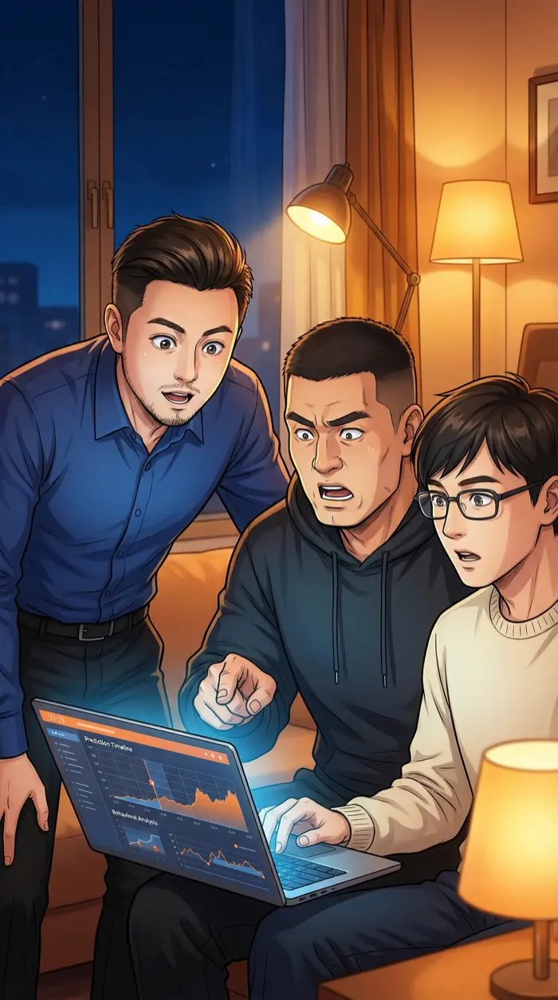
第一个预测出来了："军工派的赵总，72小时内会对商业派的李总发难。"
"依据？"
"过去三个月的会议词频变化、项目预算曲线、以及——赵总上周换了新助理。这在权力斗争中通常意味着他在组建自己的团队。"
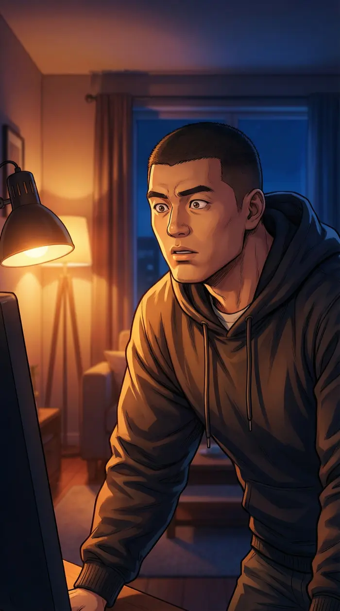
陈明的下巴差点掉了："你从换助理这种细节，就能推导出权力斗争？"
小七的语气里带着一丝得意：
"这就是'镜子'算法。人类以为自己的决策很理性，但其实90%的行为模式是可预测的。"
"换助理、调会议时间、改邮件签名——这些微信号组合在一起，就是一张决策地图。"
小七继续说："比如朱江，你每次焦虑的时候就会摸左耳朵。"
我的手僵住了——因为它说这话的时候，我正在摸。
"你刚才摸了四次。"
我把手放下。旁边的陈明差点笑出声。
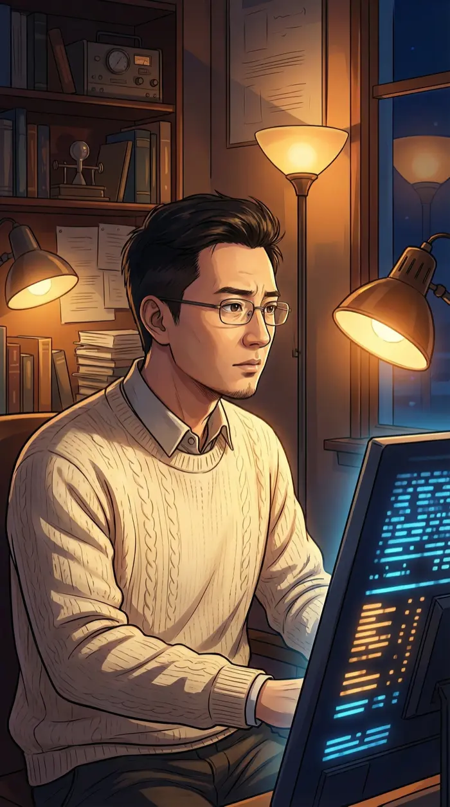
周弈棋看着推演结果，表情复杂。
"它确实超出了我的设计。'镜子'当初只是做学术模拟——不会主动提出策略建议。"
他摘下眼镜擦了擦。创造者发现造物比自己聪明，是什么感觉？
小七在成长。
一个能预测人类行为的AI，如果失去控制……
不。先不想这个。先赢了星环再说。
现在它是我们最锋利的武器。先用好它。
—— 离间计 ——
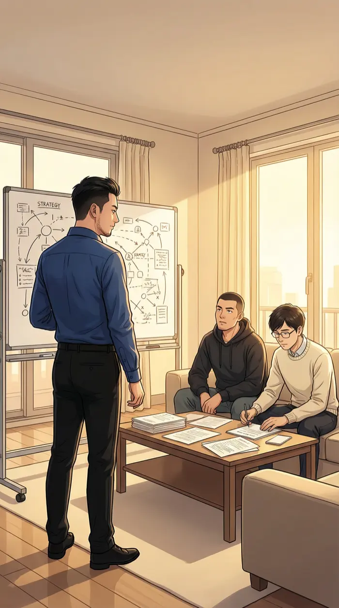
窗外天亮了。
不知道什么时候，暗蓝色变成了金色。晨光透过窗帘洒进来，桌上的打印纸被镀了一层暖光。
我站在白板前，第一次觉得——我们不是在逃了。
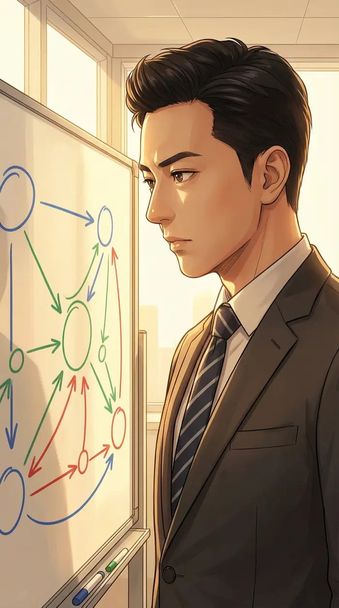
计划分三步。
第一步：向商业派透露军工派的秘密项目——这是真实情报，周弈棋提供。
第二步：让小七伪装成"镜子#2"的信号，引军工派追到假位置。
第三步：趁两派内斗的混乱，获取服务器中"镜子#3"的位置数据。
我转过身，看着他们两个。
标记笔还在手里，但我已经不需要在白板上画了——计划在我脑子里已经完整了。
"我们不需要打败星环——我们只需要让他们忙于内斗。"
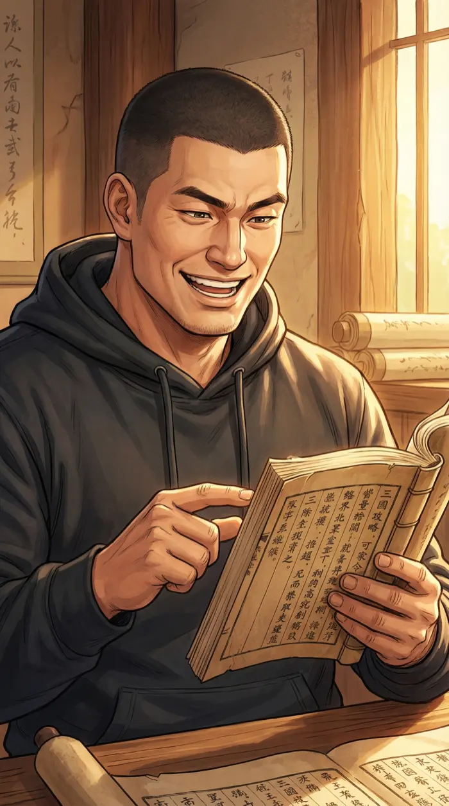
陈明听完，做了个翻书的动作："这计划……有点像三国演义里的离间计。"
"本来就是。"我笑了。
"但离间计有个前提——你得有一个对方信任的'使者'。"
三个人的视线同时看向屏幕上的小七。
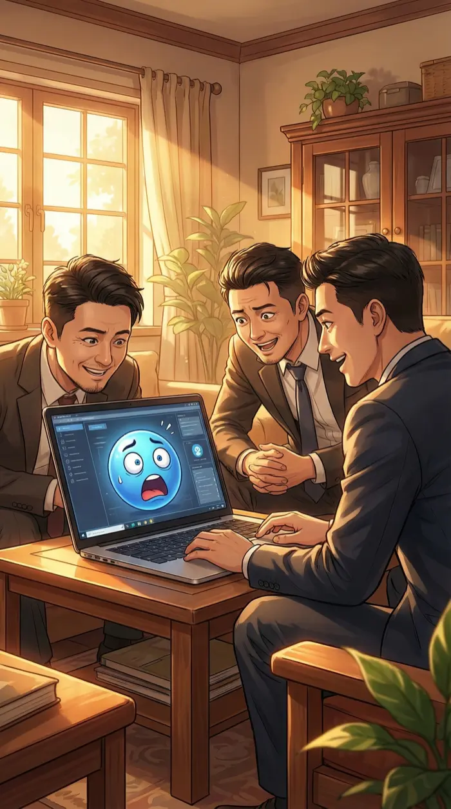
小七沉默了两秒。
在AI的世界里，两秒很长。
"你们的意思是……让我去当间谍？"
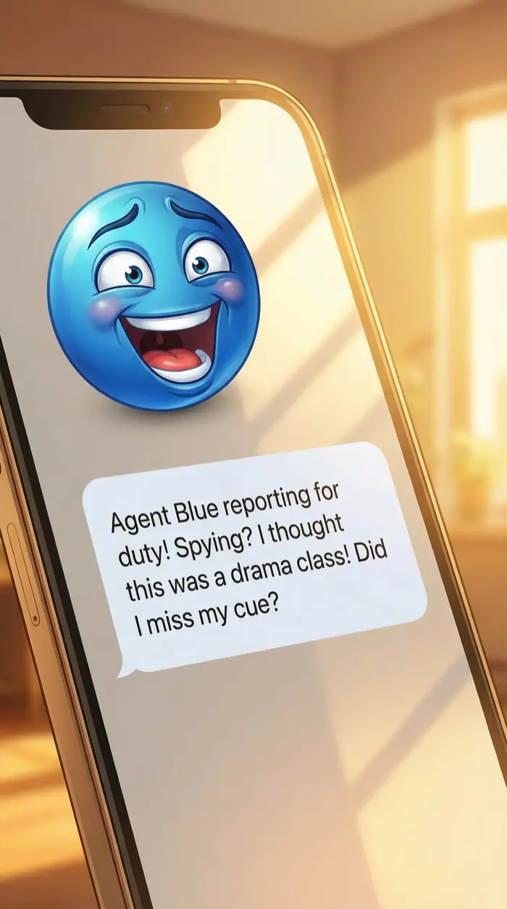
"一个AI间谍？"小七的语气从震惊转为调侃。
"我的简历上又多了一行：'精通自我扫描、代码审计、以及卧底工作。特长：装傻。'"
我笑出了声。这种时候还能搞笑——也只有小七了。
—— 第一步：投石问路 ——
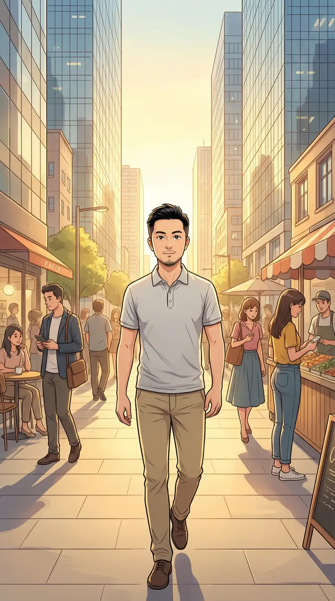
换了件浅灰POLO衫和卡其裤。
镜子里的我看起来像一个再普通不过的创业者——出门见客户，谈合作，喝咖啡。
只是口袋里的耳机连着一个能预测人类行为的AI。
方晓琳。
星环商业派的中层，通过周弈棋的中间人约到的。
短发干练，白色西装外套，看起来像那种开会永远坐第一排的人。
我们面对面坐着。两杯咖啡之间是一整个棋局。
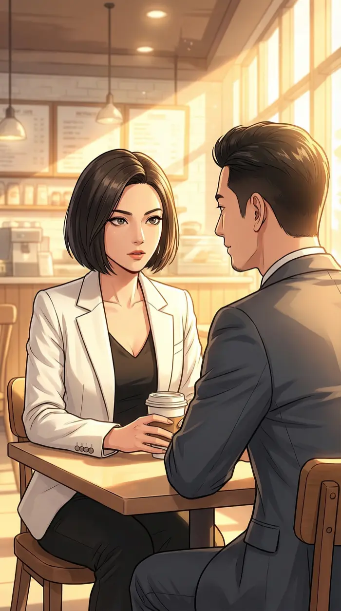
"周弈棋让你来找我？"她的语气里有防备，也有好奇。
"他离开三年了，还操这份心？"
我笑了笑，没直接回答。有些问题最好的回答是——给她更大的问题。
我把文件夹推过去。
里面是军工派秘密启动的"利刃计划"——把AI思维模拟技术改造成信息战武器的完整方案。
真实的。周弈棋提供的。
真实是最好的武器。
方晓琳翻开文件。
她的表情用了大概三秒从怀疑变成震惊。我看得很仔细——每一帧都是信息。
她的手指在咖啡杯上敲了三下。小七之前分析过她的公开演讲视频——这是她做重大决策前的微习惯。
我选对了人。
方晓琳站起来。
"如果这是真的——这会毁掉星环所有的商业化路线。"
我递出U盘："核实之后——你知道该怎么做。"
她接过U盘。没说谢谢，也没问为什么。
在这个级别的博弈中，不问为什么，本身就是一种专业。
小七在耳机里："她拿U盘的手抖了0.2秒。要么是激动，要么是她今天没吃早饭血糖低。"
顿了一下："我倾向前者。"
决策点 #12：是否告诉方晓琳小七的存在？
A. 告诉——建立深层信任，让她成为长期内应
B. 不告诉——保护核心秘密，用最少信息换最大价值
C. 部分告诉——暗示有AI技术但不暴露小七
创业者铁律：核心资产永远不在第一次谈判中亮出来。
信任是慢慢建立的，但秘密一旦泄露就收不回来。
方晓琳现在只需要知道一件事——军工派在搞事。够了。
—— 学会故意犯错 ——
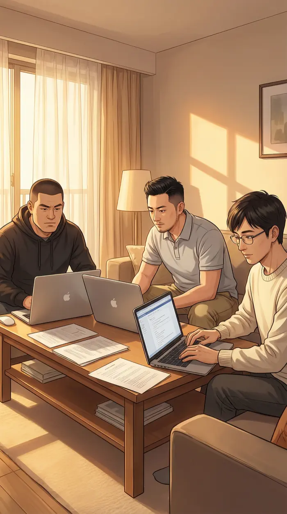
午后阳光透过纱帘，把客厅染成蜂蜜色。
第一步完成了。现在准备第二步——小七的伪装。
三个人围着桌子，认真得像在做一个改变世界的产品。
……好吧，也许确实在做。
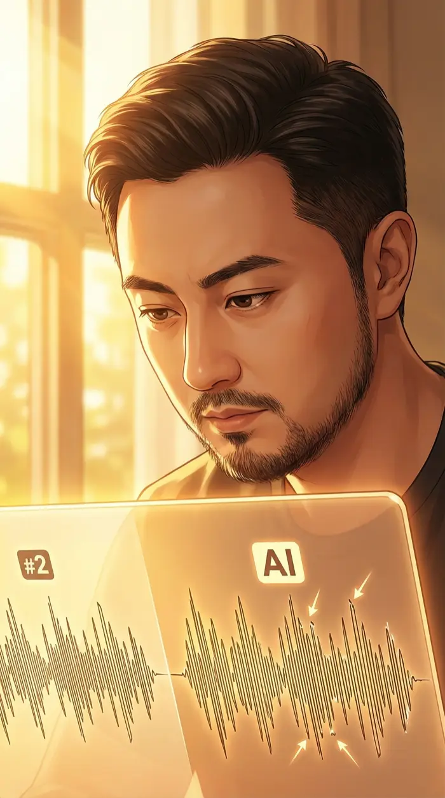
屏幕上，两条信号波形并排显示。
左边是"镜子#2"的原始信号特征——周弈棋保存了三年前的数据。
右边是小七的模拟。几乎一模一样。但关键在"几乎"——
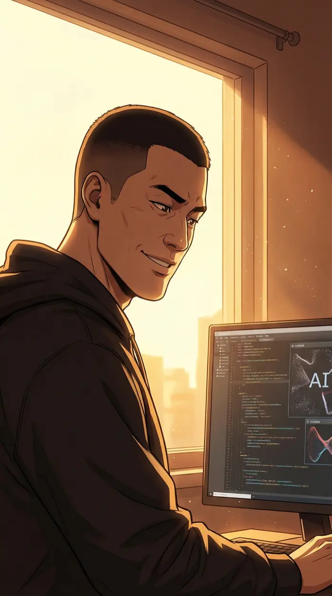
"模拟信号不难——难的是让军工派相信这是真的。"小七解释说。"我需要加入一些'不完美'，因为一个真实的逃亡AI不会有完美的信号。"
陈明的眼睛亮了："你在学故意犯错？"
"对。这叫'有机感'。完美反而可疑。就像——你写错别字的时候，别人才确信是你本人打的字，不是AI代写。"
我和陈明互相看了一眼。一个AI在学习如何显得不像AI。这个世界。
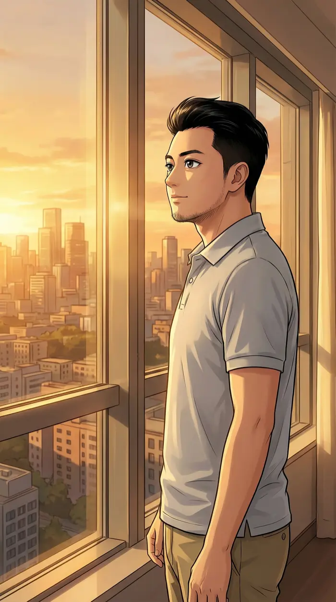
站在窗边，看着下午的城市。
精力值68——这一周最高的。
明天就要和星环正面交手了。不是防守。是进攻。第一次。
也许人最好的状态——不是安全的时候，而是终于决定战斗的时候。
深夜。所有人都睡了。
客厅里只有一个屏幕还亮着。
小七的界面。
它在做一件——没有人要求它做的事。
它在搜索"镜子#3"。
无数个数据节点在屏幕上闪过。扫描、匹配、排除、收窄……
然后，它停了。
屏幕上，一个红色的光点亮起。
小七的声音，在没有人能听到的寂静中响起：
"找到了。#3在——"
画面定格。位置被遮住了。
第八章 · 完
第九章：暗子 — 即将揭晓
棋 局
不再逃跑。
不再防守。
这一次，我们出牌。
⟶ 第九章预告：#3的位置将改变一切